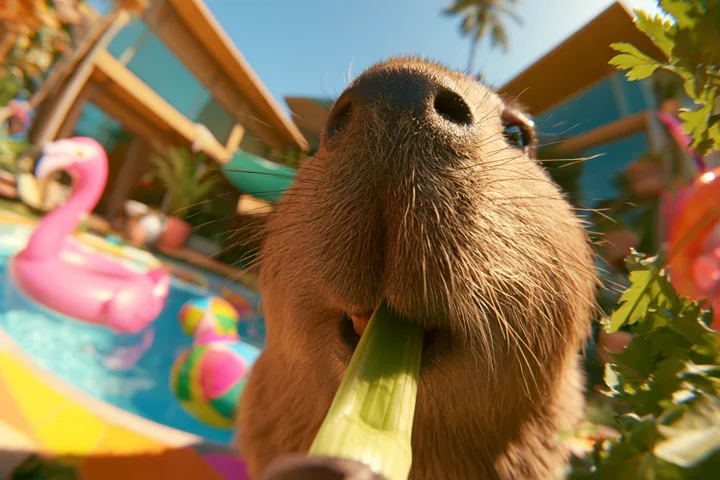
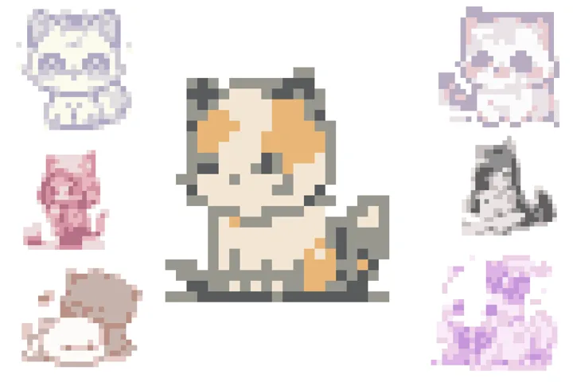
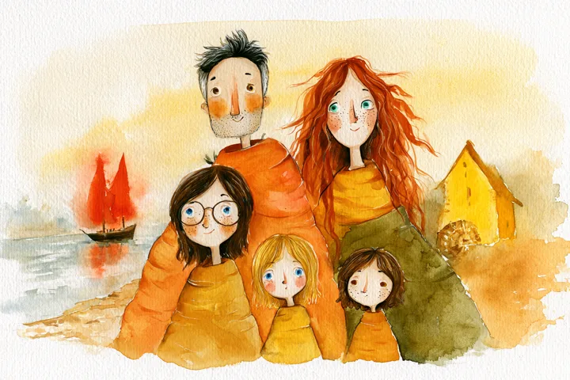

Atelier IAgora
Cartes Post-IA-les
Imagine ta carte postale, crée-la avec ou sans IA, et repars avec ton tirage photo 10×15 imprimé sur place en quelques minutes. Il ne te reste plus qu'à écrire un petit mot sur un papier cartonné et à glisser le tout dans une enveloppe.

IAgora Paris · 10.10La galerie ➭Choisis ta voie ➭

Voie 2
IA frugale
Une IA qui tourne à 100% en local sur l'ordinateur. L'outil est capable de créer des symboles en pixel art : un moyen de générer des images suffisamment légères pour tourner sur des ordis de 2019 comme ceux de l'atelier (même si leur précision fait pâle figure à côté des ténors du marché).
C'est parti ➭
cartes-iagora.vercel.app

Voie 3
IA Rolls-Royce
Le grand jeu, via Midjourney. Prompts, itérations, styles : tout est possible.
C'est parti ➭
midjourney.com/imagine
Besoin d'inspiration ?
Quelques idées pour composer son image